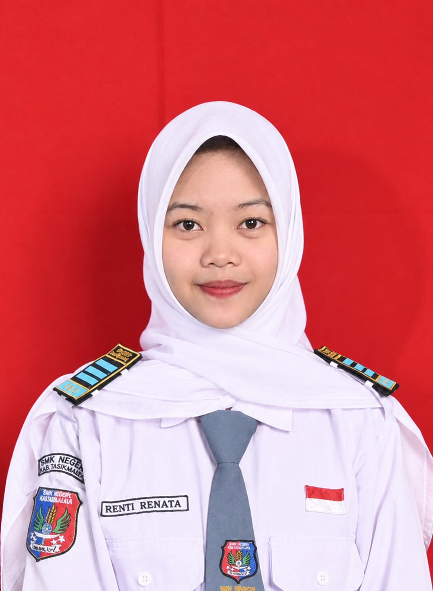

Siswi SMKN Manonjaya yang ceria, penuh semangat, dan sedang menjalankan kegiatan PKL (Prakerin) di Access Media Tasikmalaya. Suka eksplorasi Pemrograman Web & Desain Grafis.

✨ Renti Renata - SMKN Manonjaya ✨
Halo semuanya! Perkenalkan, nama aku Renti Renata. Saat ini aku adalah siswi jurusan Rekayasa Perangkat Lunak (RPL) di SMKN Manonjaya yang memiliki ketertarikan tinggi pada dunia pemrograman web dan desain antarmuka digital.
Melalui kegiatan pembelajaran di sekolah serta pengalaman praktik kerja, aku terus mengasah kemampuan front-end development (seperti HTML, CSS, Tailwind CSS, dan JavaScript) sekaligus merancang visual yang estetik. Aku percaya bahwa paduan antara logika koding yang kuat dan kreativitas seni dapat melahirkan karya website yang luar biasa! ✨
Kemampuan yang sedang saya asah dan pelajari secara konsisten
Hasil karya tugas sekolah dan proyek prakerin di Access Media Tasikmalaya
Proyek pembaruan antarmuka (UI/UX) situs utama tempat PKL agar lebih interaktif, estetik, responsif, dan mudah diakses oleh para pengunjung.
Perancangan materi presentasi & Company Profile visual berbasis Canva dengan paduan warna aesthetic untuk branding profesional.
Sistem pengelolaan data pencatatan transaksi laundry bulanan lengkap dengan perhitungan otomatis dan status pesanan pelanggan.
Perjalanan pendidikan dan praktik kerja industri Renti
Tasikmalaya, Jawa Barat
Melaksanakan tugas praktik kerja lapangan dalam perancangan desain media visual, eksplorasi antarmuka web modern, dan mempelajari budaya kerja profesional dalam tim media digital.
Kabupaten Tasikmalaya
Mempelajari dasar-dasar keahlian komputer, jaringan, serta pengembangan perangkat lunak web dan aplikasi. Aktif berpartisipasi dalam tugas kelompok dan proyek kreatif sekolah.
Tinggalkan pesan manis untuk Renti di papan ini!
Kak Pembimbing PKL
"Semangat PKL-nya Renti di Access Media! Karyanya makin keren."
Teman SMKN Manonjaya
"Website portofolionya lucu banget super pinky! Sukses selalu ya!"